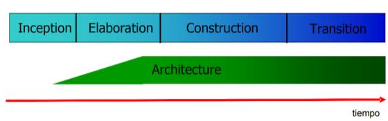
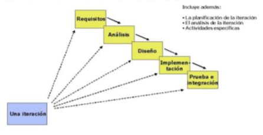

Según Kruchten, P. (2000), los caso de Uso son una técnica de captura de requisitos que fuerza a pensar en términos de importancia para el usuario y no solo en términos de funciones que sería bueno contemplar.
Caso de Uso es un fragmento de funcionalidad del sistema que proporciona al usuario un valor añadido. Los Casos de Uso representan los requisitos funcionales del sistema.
En RUP los Casos de Uso no son solo una herramienta para especificar los requisitos del sistema. También guían su diseño, implementación y prueba. Los Casos de Uso constituyen un elemento Integrador y una guía del trabajo.
La arquitectura involucra los aspectos estáticos y dinámicos más significativos del sistema, esta relacionada con la toma de decisiones que indican como tiene que ser construido el sistema y ayuda a determinar en qué orden.
Los elementos de la arquitectura se deben considerar elementos de calidad del sistema, como rendimiento, reutilización y capacidad de evolución por lo que debe ser flexible durante todo el proceso de desarrollo.
La arquitectura se ve influenciada por la plataforma software, sistema operativo, gestor de bases de datos, protocolos, consideraciones de desarrollo como sistemas heredados.
En RUP además del uso de Caso de Uso para guiar el proceso se presta atención importante al establecimiento temprano de una buena arquitectura que no se vea fuertemente impactada ante cambios posteriores durante la construcción y el mantenimiento.
Cada producto tiene una función y una forma. La función corresponde a la funcionalidad reflejada en los Casos de Uso y la forma la proporciona la arquitectura.

En RUP se propone una estrategia que es el proceso iterativo e incremental en donde el trabajo se divide en partes más pequeñas o mini proyectos.
Permitiendo que el equilibrio entre Casos de Uso y arquitectura se vaya logrando durante cada mini proyecto, así durante todo el proceso de desarrollo.
Cada mini proyecto se puede ver como una iteración del cual se obtiene un incremento que produce un crecimiento en el producto. Una iteración puede realizarse por medio de una cascada.
